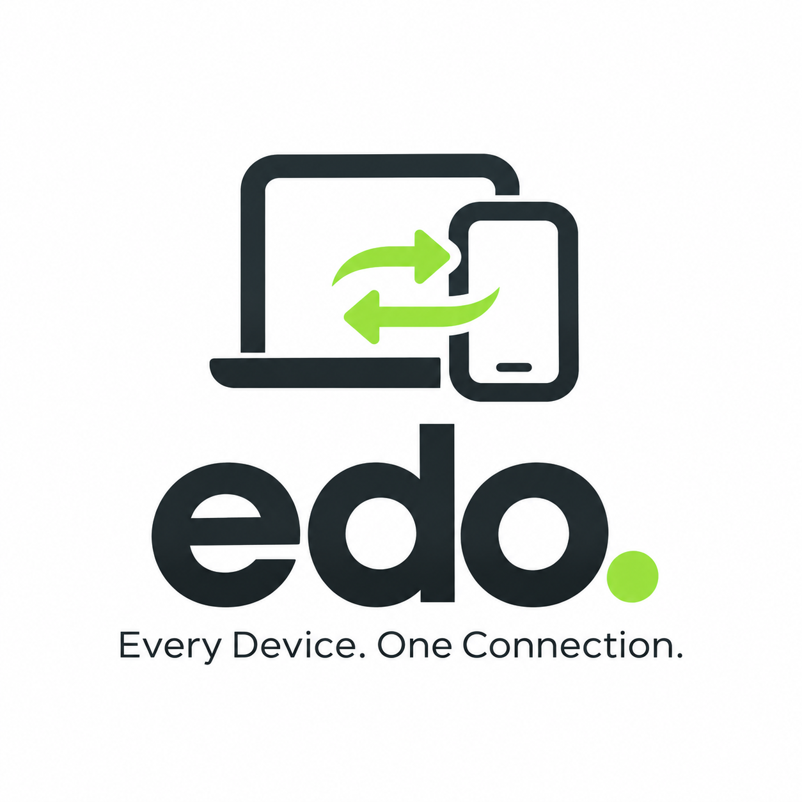

Every Device. One Connection.
Share between two PCs without a TV, or send and manage files on Google TV from a computer or phone browser. No cloud account required.
Public downloads will be available after the first verified signed release.
Version 5.4.2 · TV first · free

PC ↔ PC (no TV needed) · Google TV · phones and browser clients
Install Edo Desktop on PC A, choose a shared folder, and click Start sharing. On PC B, open the local address shown on PC A in a browser and enter the six-digit PIN. Use Transfer to upload B → A or Files to download A → B. Both PCs should be on the same trusted Wi-Fi or Ethernet network.
You can also use Edo Desktop on both PCs for advanced backup and non-destructive two-way merge.
Scan Edo’s TV QR code and pair using the PIN.
Transfer files on your Wi-Fi or Ethernet network.
Organize and open received files from your TV.
Edo’s standard HTTP mode is not encrypted. Use only on trusted networks. Optional HTTPS uses a device-local certificate that may require manual trust.